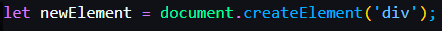

this creates a new 'div' element and stores it in the 'newElement' variable.
practical use examples:

usually followed by this, you can set attribute to it, and in following formats.

this set attributes to it, like the type of input 0 ~ 4 is text, and the value of them is the value that were stored in the variable originalWord 0 ~ 4.

this adds the `newElement` to the end of the document body.
practical use examples: